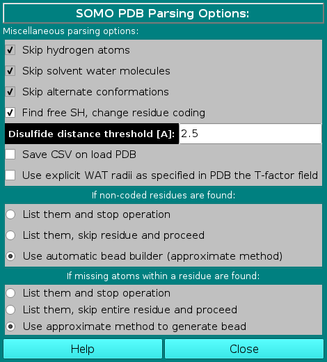

|
Manual
|
SOMO - PDB Parsing Options Module:
Last updated: June 2024

In this module you can control the options affecting the
way SOMO reads and loads the various fields present in PDB files.
In the Miscellaneous parsing options subpanel, the first three options listed are not presently selectable, and are currently hard-coded in the program. The the fourth has been made operational in September 2020 (default: selected), and the other two are additions made in December 2020.
-
Skip hydrogen atoms. Explicit hydrogen atoms are found in NMR- or neutron crystallography-derived structures, and are not coded for in the distributed somo.residue file. Therefore, the parser automatically skips any line containing them. In the current SOMO implementation, the hydrogen atoms are "included" in the heavy atoms to which they are bound, but we do not exclude to make the skipping as an option to allow users to explicitly treat hydrogens; obviously, this will call for a re-definition of all atoms and residues in the somo.hybrid, somo.atom, and somo.residue files.
-
Skip solvent water molecules. In the current US-SOMO implementation, the water of hydration is treated in a statistical manner. Therefore, lines in PDB files coding for explicit crystallographic water molecules are automatically skipped. However, we plan to make this as an option in the future, since one might wish to investigate the effect of the crystallographic waters on the hydrodynamics, or to use artificial hydration schemes employing explicit water molecules. As for the previous field, using explicit waters will also call for a re-definition of the hydration numbers in the somo.residue file.
-
Skip alternate conformations. PDB files sometimes contain alternate coordinates for particular atoms within residues. It is presently not possible to explore the effect of these alternate conformations, which should be negligible anyway. Therefore, presently US-SOMO uses only the first ("A") alternate conformation by default. In the future, we might provide the choice between the alternate conformations.
-
Find free SH, change residue coding. In the somo.residue file, cysteine (CYS) is treated as if it's always engaged in a S-S bond with another cysteine (a cystine pair). This is because currently there's no distinction in PDB files between cysteines and cystines. Since this involves slightly different physico-chemical parameters (e.g., two H atoms are lost when a S-S bridge is formed), we now offer an automatic "free SH" finder. The loaded PDB structure will be scanned and the mutual spatial distance between every the SG atom in CYS residues (if present) will be measured. Every CYS-CYS pair for which the spatial distance between their SG atoms is below the cut-off value listed in the Disulfide distance threshold [A]: field (default: 2.5 Å) will be identified as disulfide-bonded and listed in the right-side progress window of the main US-SOMO panel. Any CYS residue for which the SG atom isn't within bonding distance from another CYS SG atom will be considered as a free SH, and its residue name will be changed to CYH, for which the coding is already provided within the somo.residue file.
-
Save CSV on load PDB. If this checkbox is selected, when you load a pdb a csv file is created with the following columns:"Atom number","Atom name","Residue number","Residue name","Radius","Mass [Da]","X","Y","Z". The Radius and Mass fields are populated using values stored in the somo.residue file (note that the mass includes any ionized weight difference). The file is placed in the user's ultrascan/somo/tmp directory and it is listed in the text area: "Created CSV atomic file: filename-with-path".
-
Use explicit WAT radii as specified in the PDB T-factor field. This is an experimental option that allows modeling explicit water molecules (using WAT as a residue name), with a specific radius (Å) defined in the temperature-factor ("T-factor") field in PDB files.
|
The next two subpanels deal with non-coded residues and missing atoms, respectively:
In the If non-coded residues are found: subpanel, the user will be able to choose between three
options:
-
List them and stop operation. This is the most rigorous option, and calls for properly define the "new" residue in the somo.residue (and in the somo.atom, if "new" atoms are also present) file(s). The program is therefore halted, waiting for proper action to be taken.
-
List them, skip residue and proceed. This is the least rigorous option, as skipping residues will affect the computations on two levels. First, if the skipped residues are exposed, their contribution to the hydrodynamics will be missed. Second, their contribution to the molecular weight and partial specific volume of the structure will be also missed, although this can be bypassed by entering global values in the appropriate fields (respectively in the
SOMO Hydrodynamic Calculation Options and Miscellaneous Options panels). Therefore, this option should be used only if the skipped residue(s) is (are) known to not likely contribute to the hydrodynamics, and by entering appropriate global values for the molecular weight and partial specific volume.
In any case, if this option is selected, the pop-up window shown below will appear warning of the potential errors and suggesting to enter appropriate values for the global molecular weight and partial specific volume.
|
 |
-
Use automatic bead builder (approximate method).
This is a "patch" option, allowing to roughly define a single "side-chain" bead for each non-coded residue. This procedure is based on an "average" volume for each atom (with an "average" molecular weight and hydration number), from which a global volume (and molecular weight) is calculated. An "average" radius for each atom is also provided for the ASA routines (see here). The bead is then placed at the center of mass of all the atoms within the non-coded residue, and an "average" partial specific volume and color-coding ("10", light green) are also assigned to it. All these "average" values can be modified in the Miscellaneous Options panel. However, the program will first perform a check to recognize if the non-coded residue has the structure of an amino acid (i.e., if the N, CA, C, and O atoms are all present). In this case, it will generate a standard "peptide bond" bead for these atoms, and a second bead for the non-coded side chain using the approximate method. In any case, as with the previous option, the approximations introduced in the molecular weight and partial specific volume can be bypassed by entering global values in the appropriate fields (respectively in the SOMO Hydrodynamic Calculation Options and in the Miscellaneous Options panels).This is now (since May 2015) the default option for this subpanel. If non-coded residues are found in the uploaded file, a pop-up window will appear offering the alternative options to continue using the approximate method, suggesting to enter appropriate values for the global molecular weight and partial specific volume, and prompting to check the approximate method parameters, skip the whole residue, or stop the program execution, waiting for corrective action to be taken.
|
 |
|
In the If missing atoms within a residue are found: subpanel, the user will be able to choose between three
options:
-
List them and stop operation (fix it with WHATIF). This is the most rigorous option, and calls for either manually build the missing atoms in the PDB file, or, for proteins, to use an automatic missing atom(s) builder such as WHATIF (http://swift.cmbi.ru.nl/servers/html/index.html; WARNING: WHATIF will not build missing main chain atoms, only side chain atoms). The program is therefore halted, waiting for proper action to be taken.
-
List them, skip entire residue and proceed. This is the least rigorous option, as skipping residues will affect the computations on two levels. First, if the skipped residues are exposed, their contribution to the hydrodynamics will be missed. Second, their contribution to the molecular weight and partial specific volume of the structure will be also missed, although this can be bypassed by entering global values in the appropriate fields (respectively in the SOMO Hydrodynamic Calculation Options and Miscellaneous Options panels). Therefore, this option should be used only if the skipped residue(s) is (are) known to not likely contribute to the hydrodynamics, and by entering appropriate global values for the molecular weight and partial specific volume.
In any case, if this option is selected, the pop-up window shown below will appear suggesting to enter appropriate values for the global molecular weight and partial specific volume. The reason why only the missing atoms cannot be skipped is because they might be used to define the position of the bead, so their absence cannot be tolerated.
|
 |
-
Use approximate method to generate bead.
This is a "patch" option, allowing to keep the original bead definitions. It is based on the assumption that the missing atoms were present in the original macromolecule, but could not be located experimentally. If the missing atoms are not among those defining the position of the bead, nothing is really affected. When one or more (but not all) the atoms determining the position are missing, the remaining ones are used to position the bead. If all the position-determining atoms are missing, then the bead will be positioned at the cog of all the atoms present. If all the atoms of a bead are missing, their parameters (mass, volume, hydration) will be added to those of the next bead, creating a single bead positioned on the cog of all atoms present. For instance, for an amino acid completely missing the side-chain, the peptide bond size and mass will be that of the original peptide bond plus that of the missing side chain, positioned as a regular peptide bond bead. For amino acids, if the missing atoms belong to the peptide bond segment, then the peptide bond rule (see here) will be disallowed.
If coded residues contains extra or non-coded atoms, they will be treated as non-coded residues with the automatic bead builder. This is now (since May 2015) the default option for this subpanel. If missing atoms within coded residues are found, a pop-up window will appear asking if it's OK to proceed.
|
 |
www contact: Emre Brookes
This document is part of the UltraScan Software Documentation
distribution.
Copyright © notice.
The latest version of this document can always be found at:
http://somo.aucsolutions.com
Last modified on Jube 16, 2024